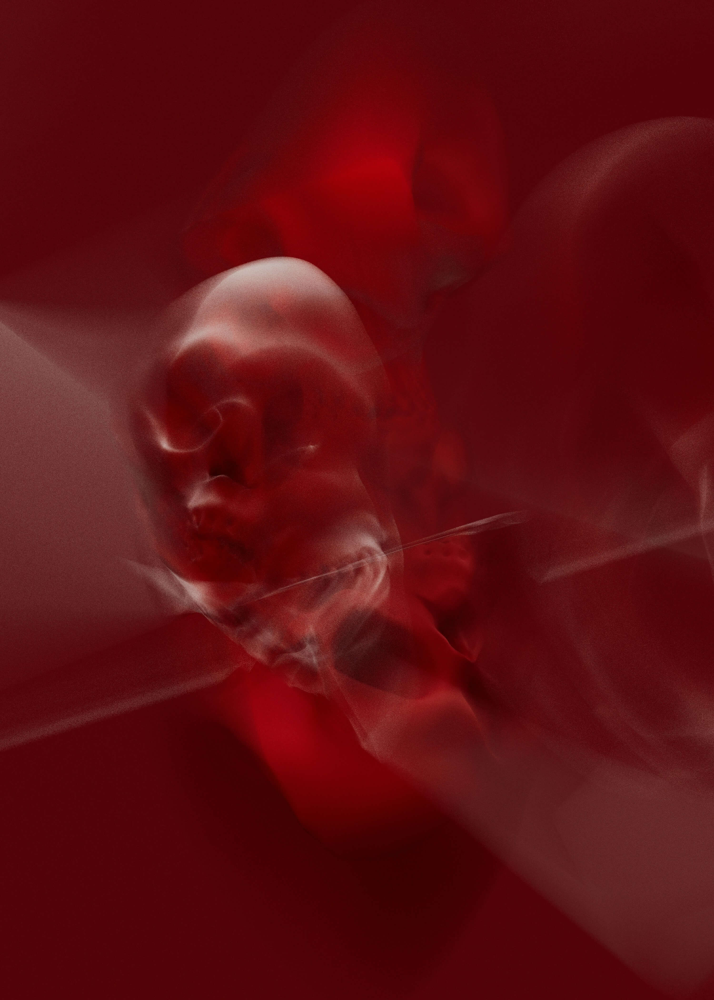
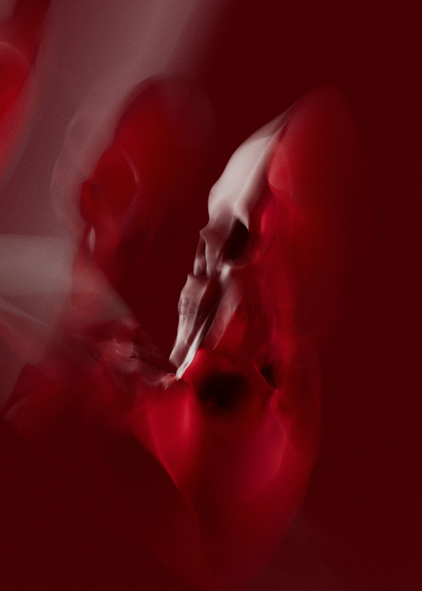

ZI HAN / WEB WORKBOOK
Home
Experiments
Archive
Journal
P5.js
Play
Process

Reference study: layout, scale, contrast, and negative space

Reference study: image hierarchy, modular rhythm, and navigation